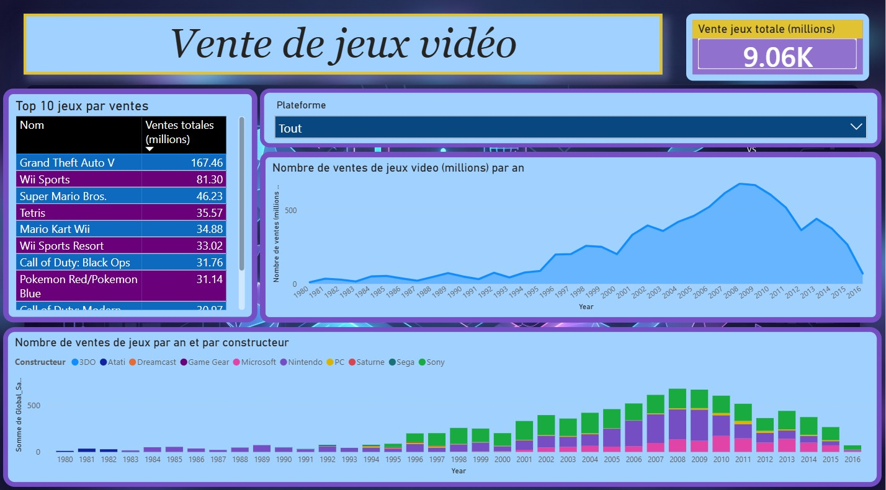

Aperçu des visuels & dashboards

Analyse des tendances historiques, modèles économiques (microtransactions) et projections des ventes à l'horizon 2030.
Contexte & Objectifs
L'industrie du jeu vidéo est en constante mutation, avec des budgets de développement AAA extrêmement élevés qui ne laissent que peu de marge d'erreur lors de la prise de décision. L'objectif de cette étude menée pour UOI Games était d'identifier les segments de marché les plus porteurs, de mesurer les préférences des joueurs et de proposer des recommandations appuyées par des données factuelles.
Cadre Stratégique (SWOT & PESTEL)
L'analyse environnementale a permis de dégager la maturité des écosystèmes (streaming, e-sport) mais aussi les risques liés à la hausse des coûts de développement et à la saturation du secteur AAA. Sur le plan PESTEL, la baisse du pouvoir d'achat renforce la sensibilité aux prix, tandis que le format dématérialisé et l'évolution vers le modèle Live Service redéfinissent la monétisation.
Enquête Terrain & Analyses Statistiques
Sondage Utilisateurs
Mise en place d'un questionnaire en ligne dédié pour tester les hypothèses de consommation auprès des joueurs (fréquence, supports, habitudes).
Préférences par Région (ANOVA)
Validation statistique d'une différence significative des ventes par genre selon les régions (ex. nette préférence du Japon pour les RPG et domination des Shooters/Plateformes en Amérique du Nord).
Test de Portabilité (Pearson)
Évaluation de la corrélation entre portabilité et ventes. La portabilité n'apparaît comme un critère d'achat positif significatif qu'au Japon.
Âge vs Fréquence (Spearman)
Mise en évidence d'une légère corrélation négative (-0.12) : l'augmentation de l'âge s'accompagne d'une baisse du temps/fréquence de jeu.
Recommandations & Prévisions de Ventes
- Concept Recommandé : Jeu d'action hybride (Plateforme / Shooter) orienté multijoueur avec parties courtes et gameplay dynamique adapté aux 25-50 ans.
- Plates-formes & Distribution : Lancement Cross-Plateforme (PC, Consoles) en distribution 100% dématérialisée avec une sortie internationale immédiate.
- Modèle Économique : Prix d'entrée accessible ou modèle Free-to-Play financé par du contenu évolutif et des microtransactions esthétiques (skins, battle pass).
- Prévisions de Ventes : Estimation du volume de ventes à 1,66 million d'exemplaires à l'horizon 2030 sur ce segment AAA spécifique d'Action.